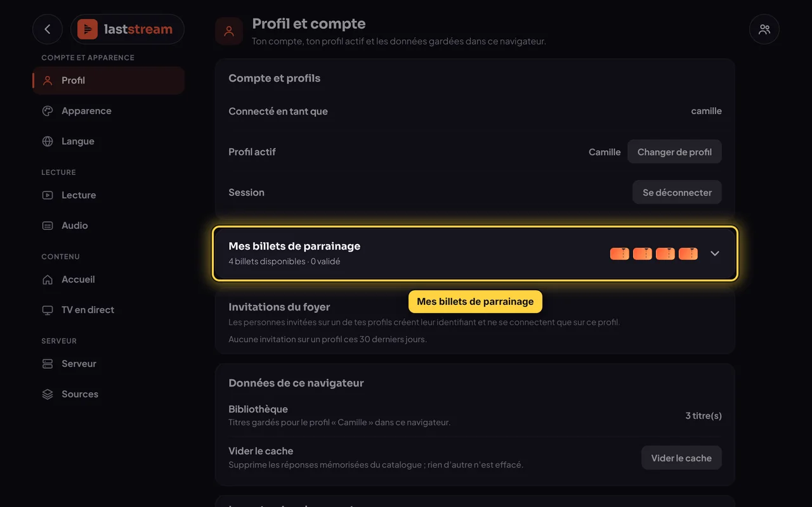
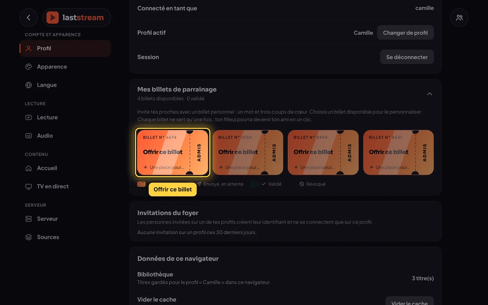
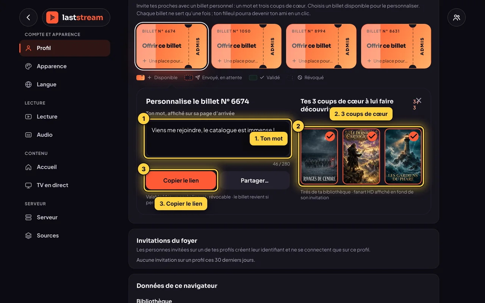
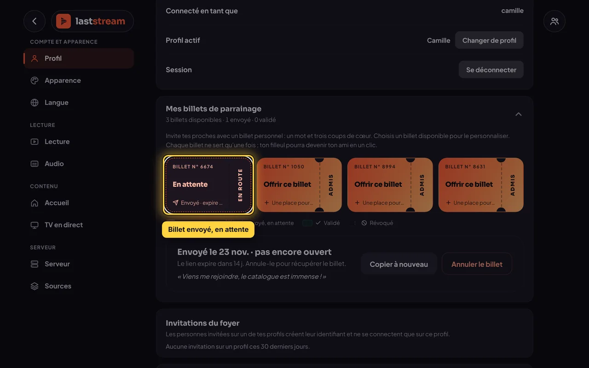

Prérequis
- Un compte connecté, sur un profil adulte.
- Quelques titres dans ta bibliothèque si tu veux proposer des coups de cœur.
Étapes
Sur chaque capture, le cadre jaune montre où toucher ou cliquer ; les numéros donnent l’ordre.
-
Ouvre les « Réglages » (ton avatar en haut à droite), catégorie « Profil ». Touche « Mes billets de parrainage » pour déplier tes billets.

-
Choisis un billet disponible : « Offrir ce billet ».

-
Écris ton mot (1, 280 caractères maximum) : il s’affiche sur sa page d’arrivée. Choisis jusqu’à 3 coups de cœur dans ta bibliothèque (2).
Touche « Copier le lien » (3), ou « Partager… » pour l’envoyer directement depuis ton téléphone.

-
Envoie le lien comme tu veux (message, e-mail…). Le billet passe en « Envoyé, en attente » jusqu’à ce que ton proche crée son compte.
